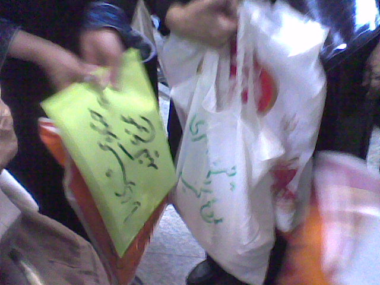
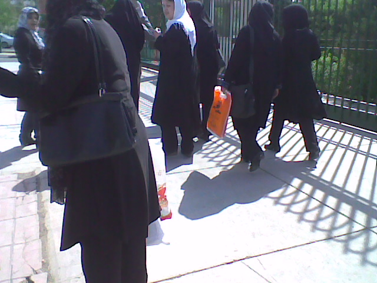
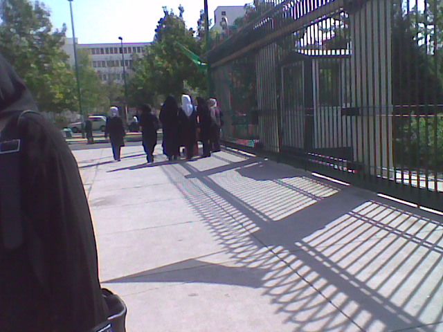
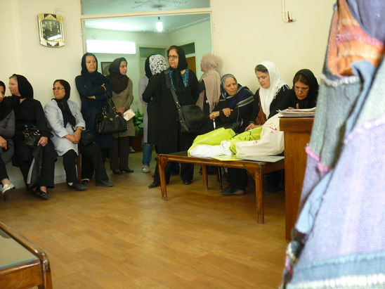
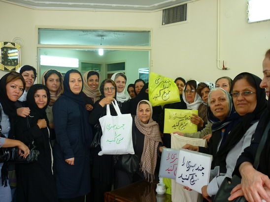
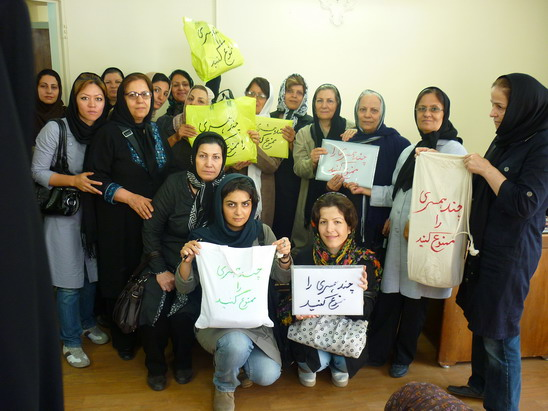

|
|
پنجاه فعال حقوق برابر با پنج هزار امضا در مجلس
يكشنبه4 مهر 1389

تغییر برای برابری - بیش از 5000 امضا در اعتراض به تصویب و ترویج قانون چندهمسری برای مردان به مجلس تحویل داده شد

صبح امروز یکشنبه 4 مهر 89 پنجاه نفر از فعالان حقوق برابر اعم از جوانان و مادران برابری خواه از شهرهای مختلف ایران بیش از 5000 امضا ذیل بیانیه ای در اعتراض به مواد جنجال برانگیز لایحه حمایت از خانواده را به کمیسیون حقوقی و قضایی مجلس شورای اسلامی تحویل دادند آنها با حضور در مجلس اعتراض خود و شهروندان ایرانی را به گوش اعضای کمیسیون رسانده و خواستار توقف تصویب این مواد شدند.

ابتدا از دیدار و گفتگوی فعالان حقوق برابر با نمایندگان ممانعت به عمل آمد اما آنان ضمن حضور در دفتر ارتباطات مردمی علی لاریجانی, رئیس مجلس, از حق خود به عنوان شهروند پافشاری کردند. سرانجام قرار بر این شد که یک یا دو نفر از افراد حاضر به نمایندگی از جمع باکمیسیون قضایی دیدار کرده و برگه های امضا شده ی شهرها و سایر کشورها را به آن کمیسیون تحویل دهند.

بعد از ظهر امروز خدیجه مقدم فعال حقوق زنان به نمایندگی از جمع حاضر ضمن تحویل برگه های امضابا آقایان شاهرخی و غضنفرآبادی, رئیس و نایب رئیس کمیسیون حقوقی و قضایی مجلس ملاقات کرد. وی در بازگشت از ملاقات نتیجه مذاکرات خود را مثبت ارزیابی کرد.مقدم همچنین اعلام کرد با زهره الهیان نماینده مجلس شورای اسلامی هم دیدار کرده و ایشان نیز مخالفت قطعی خود را با ماده 23 لایحه حمایت از خانواده ابراز داشته است .

فعالین حقوق برابر در ادامه تلاشهای گسترده خود برای حذف مواد جنجالی لایحه حمایت از خانواده با نوشتن بیانیه ای و دریافت امضا از مردم شهرهای مختلف از جمله تهران, لاهیجان، اصفهان، کرج، زنجان، رشت، صومعه سرا، بندرانزلی، قائم شهر، تبریز، خوی، شیراز، لار، خرم آباد، مشهد، گرگان، بابل، بابلسر، ساری، یزد، اهواز، اراک، الیگودرز، همدان، اسلامشهر، شهرری، لاهیجان، قزوین، محلات، کاشان، ملایر، کرمانشاه، نهاوند و بروجرد خواستار عدم تصویب ماده 23 در مجلس شدند. جالب آنکه امروز هنگام تحویل بخشی از امضاها به مجلس برخی از معلمانی که برای پیگیری مطالبات خود در مجلس حضور داشتند بیانیه را امضا کرده و مخالفت شان را با تصویب ماده ترویج کننده چندهمسری برای مردان اعلام کردند.

این 5000 امضا که نخستین بخش امضاهای جمع آوری شده است هم اکنون در کمیسیون حقوقی و قضایی مجلس شورای اسلامی است و فعالان حقوق برابر همچنان به جمع آوری آرای مردم در این زمینه ادامه می دهند